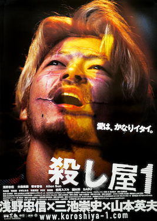
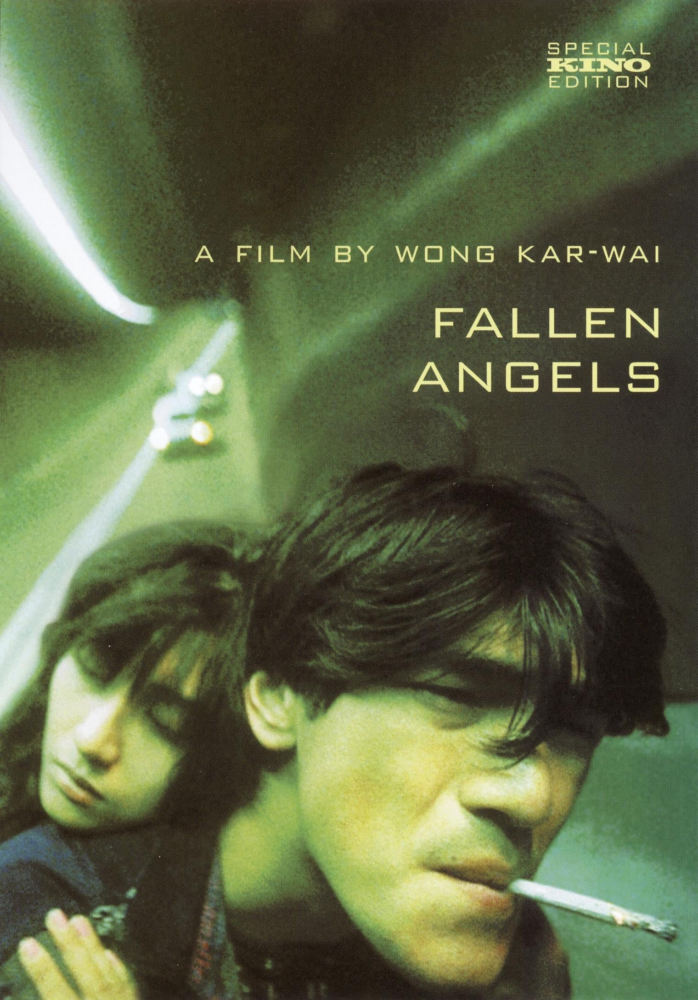
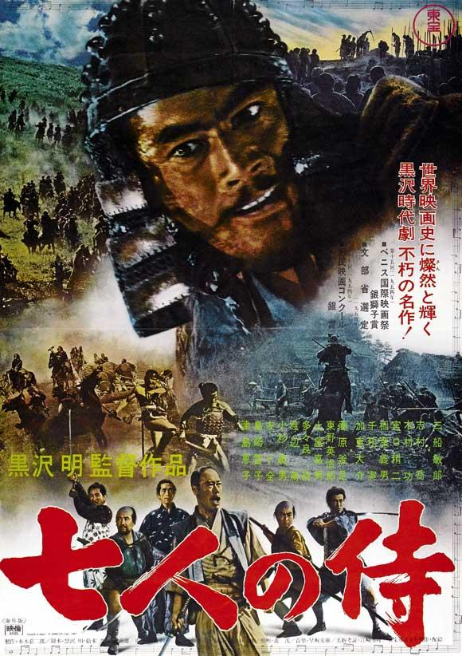
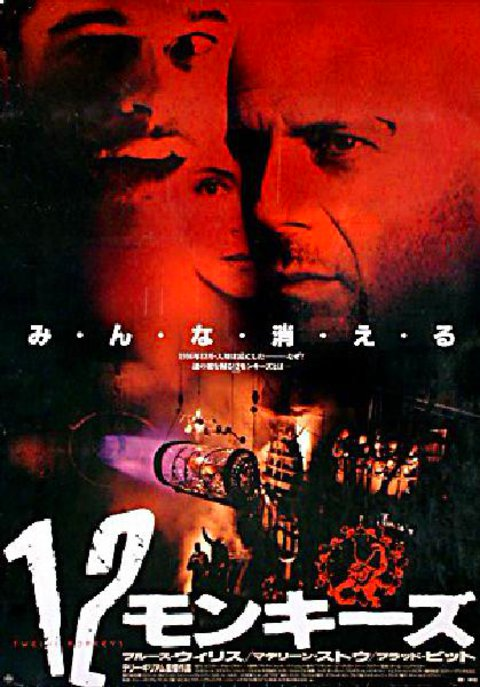

Ichi the Killer (2001)

Hiperviolencia y sadomasoquismo extremo en una guerra de bandas yakuza.

Hiperviolencia y sadomasoquismo extremo en una guerra de bandas yakuza.
Supervivencia extrema y crítica social japonesa.

Retrato melancólico de asesinos y soledad bajo las luces de neón de Hong Kong.

Épica japonesa sobre honor, sacrificio y defensa de los desprotegidos.

Distopía mental sobre viajes en el tiempo, virus y fragilidad de la cordura.
Historia de amor en el bullicioso Hong Kong.
Hola! Me llamo Samuel. Bienvenido a mi archivo personal de cine y música. Un simple recorrido por mis cosas favoritas.